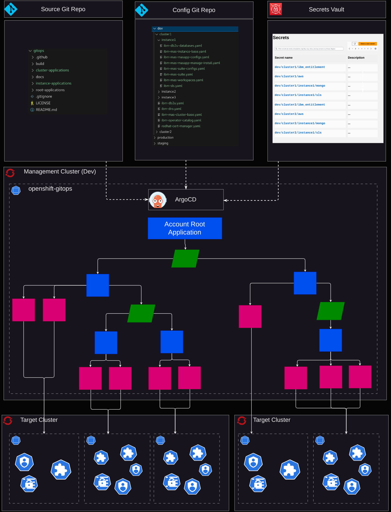

IBM Maximo Application Suite - Gitops
Overview
A GitOps approach to managing Maximo Application Suite.
Architecture

The Source Git Repo provides Helm Charts that define all of the Kubernetes resources required to deploy MAS instances using ArgoCD. The ibm-mas/gitops repository can be used directly as the Source Git Repo, or a fork can be used if desired.
The Config Git Repo provides configuration YAML files that define the Values for rendering the Helm Charts in the Source Git Repo. The Config Git Repo defines how many MAS instances will be deployed and where and how each of the MAS instances are configured. Each top-level folder contains the config for one Account (e.g. "dev", "staging", "production"). Each Account has a subfolder per Target Cluster. And each Target Cluster has a subfolder per MAS Instance that should run on that cluster.
The Secrets Vault is used to store sensitive values that should not be exposed in the Source Git Repo. They are fetched at runtime using the ArgoCD Vault Plugin from some backend implementation (e.g. AWS Secrets Manager).
ArgoCD is installed and configured on some Management Cluster. A single Account Root Application is registered with ArgoCD. This tells ArgoCD how to access the Source Git Repo, Config Git Repo and Secrets Vault and which Account ID (i.e. which top-level folder of the Config Git Repo) to monitor for configuration files.
The Account Root Application is the only Application that is created directly. We employ the App of Apps pattern whereby the Account Root Application uses the artifacts in the Source Git Repo, Config Git Repo and Secrets Vault to dynamically generate (a tree of) further Applications (and ApplicationSets) which themselves may generate other Applications (and ApplicationSets) and/or configure a set of resources on one of the Target Clusters.